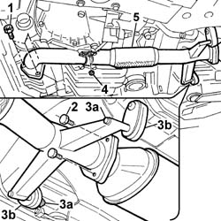

1076B50 Exhaust PIPE attachment to engine/manifold - R.R.
- Path
- Procedures > 10 ENGINE > 1076 EXHAUST PIPES AND SILENCERS > 1076B EXHAUST PIPES AND SILENCERS > 1076B50 Exhaust PIPE attachment to engine/manifold - R.R.
- Kind
- repair procedure (removal / refitting; the operation number is the code)
- Applies to
- engines: 2.4 JTD 20V; all production periods
- Interactive page
- https://sloeber94.github.io/elrnDB-lThss/en/#/850757
Applies to: engines: 2.4 JTD 20V; all production periods
 Removing
Removing
 Refitting
Refitting- Position the vehicle on the lift.
- Raise the vehicle.
See in Op. 7055B54 PROTECTION/GUARD under engine - R.R.
1. Undo the bolts fixing the exhaust pipe to the manifold.
2. Undo the nuts fixing the pipe to the catalytic converter.
3. Release the pins (3a) from the rubber mountings (3b) on the bodyshell.
4. Undo the nuts fixing the reinforcement bracket.
5. Remove the front section of the exhaust pipe complete with gaskets.

Applies to: engines: 2.4 JTD 20V; all production periods
Refitting
Removing- Position the exhaust pipe gaskets.
- Position the front section of the exhaust pipe.
- Secure the pins to the rubber mountings.
- Tighten the bolts fixing the pipe to the catalytic converter.
 | Value - daNm | Fastening | Component | Ø |
|---|---|---|---|---|
. | (catalytic converter) 2.8 | Bolts | EXHAUST PIPE TO ENGINE | M8 |
- Tighten the bolts fixing the exhaust pipe to the manifold.
| Value - daNm | Fastening | Component | Ø |
|---|---|---|---|---|
. | (Exhaust manifold) 2.8 | Bolts | EXHAUST PIPE TO ENGINE | M8 |
- Tighten the nuts fixing the reinforcement bracket.
See in Op. 7055B54 PROTECTION/GUARD under engine - R.R.
- Lower the lift and remove the vehicle from the lift.